RoboDog monitoring in VR
RoboDog VR Monitoring System
On 12.2.2026, student team members S. Reponen, L. Fagerholm, and L. Tao presented a wireless 360-degree video system transmitting from a Go2 robot dog to VR-glasses for the RoboFleet project.
The modular setup utilizes an Insta360 X4 camera and Raspberry Pi 5 to allow safe remote monitoring of dangerous production areas without pausing work.
Partial funding for this third part of the RoboDog project was granted by the Regional Council of Satakunta under EU Structural Policy Projects.

Learn more
